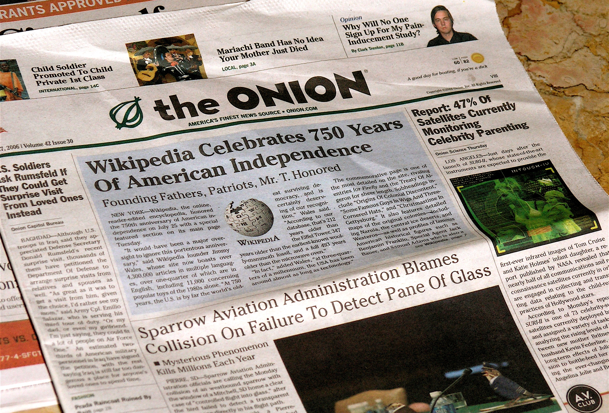
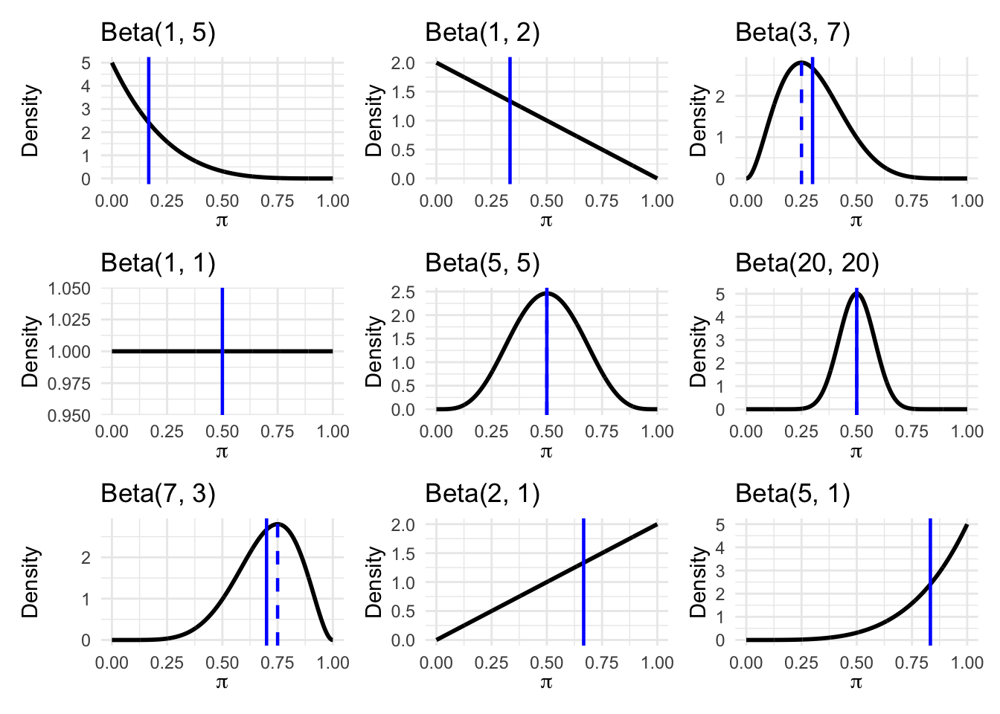
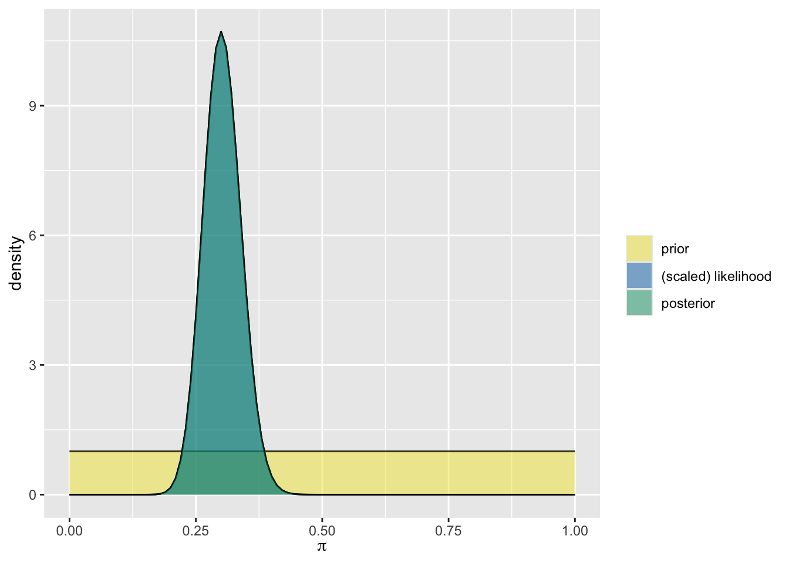
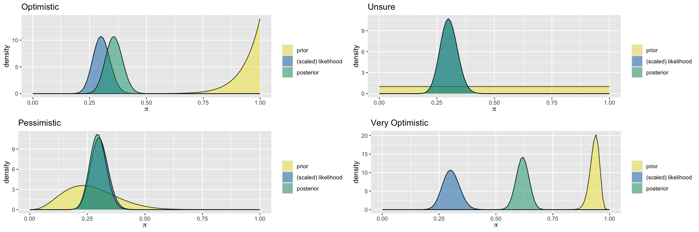

library(tidyverse)
library(bayesrules)
library(gridExtra)
library(googlesheets4)
library(googledrive)CNN vs. The Onion - Beta Binomial
Activity Introduction
The goal of this activity is to explore how prior beliefs, what we think is likely before seeing any data, can influence the conclusions we draw after seeing new evidence: our posterior. To make things interesting, we will use a quiz where you’ll try to tell whether a headline came from CNN (a real news site) or The Onion (a fake, satirical news site).
Before taking the quiz, you’ll think about how many headlines you expect to guess correctly, and you’ll turn that guess into a prior, or starting point for your beliefs. Then, you’ll update your beliefs using data from actual quiz results and compare your updated beliefs, posterior, to those of other types of guessers: someone expecting to guess most answers correctly (optimistic), someone unsure whether they will guess many right or wrong (unsure), and someone expecting to guess most answers incorrectly (pessimistic) about how many answers they will get correct in the game.
Learning objectives
By the end of the activity you’ll be able to:
Understand what a prior and posterior are
See how beliefs change when we get new information
Make and interpret plots of different prior and posterior distributions
Let’s dive in and see how well we can guess the news from fiction and learn about Bayesian thinking along the way!
CNN vs The Onion
CNN (the Cable News Network) is widely considered a reputable news source. The Onion, on the other hand, is (according to Wikipedia) “an American news satire organization. It is an entertainment newspaper and a website featuring satirical articles reporting on international, national, and local news.” Another way of putting it - The Onion is “fake news” for entertainment purposes.
In this exercise you will assess your ability to determine real news stories published on cnn.com from fake news stories published on theonion.com.

Packages
Run this set up code to load the functions first
Priors
The CNN vs. The Onion quiz consists of 15 questions. Each question has the same possible answers: CNN or The Onion. Before we take the quiz, predict how many headlines you will guess correctly out of 15. You might think about your ability to determine fact from fiction or your familiarity with CNN and The Onion.
Let \(\pi\) be the proportion of correct answers you guess right in the CNN vs the Onion quiz. Keeping that number in mind, let’s explore in the table below, three different priors from three different people \(\pi\)
| Optimistic | Unsure | Pessimistic |
|---|---|---|
| Beta(14, 1) | Beta(1, 1) | Beta(5, 10) |
Why do we use the Beta distribution?
The Beta distribution is commonly used as a prior for probabilities because it is defined on the interval \([0, 1]\), just like any probability.
Its two shape parameters \(\alpha\) and \(\beta\) can be interpreted as representing prior pseudo-observations:
- \(\alpha - 1\): prior successes
- \(\beta - 1\): prior failures
This means a Beta\((\alpha, \beta)\) distribution is like saying:
Before seeing any new data, I’ve seen about \(\alpha - 1\) cases where this went right, and \(\beta - 1\) where it didn’t.
This interpretation helps ground priors in real-world expectations.
When you construct your own prior, you can use your guess for how many headlines you’ll get right as your “prior successes” and how many you’ll get wrong as your “prior failures”. For example, if you are pessimistic about the number you might get correct and think you’ll get 5 out of 15 correct, you might choose:
\[ \text{Beta}(5, 10) \]
Plotting the Priors

Where does your prediction fall?
When we construct our priors from the Beta distribution, the shape parameters \(\alpha\) and \(\beta\) can be interpreted as the approximate number of successes and the approximate number of failures. In constructing your prior, you can derive your alpha and beta parameters into how many questions out of 15 you expect to get correct: Beta(approx_number_correct, approx_number_wrong).
Returning to your own prediction, replace approx_number_correct and approx_number_wrong with your predictions.
Looking at the graph of your prior, which guesser is your prior most similar to: Optimistic, Unsure or Pessimistic?
Vocabulary
We often describe priors in terms of how much information they give about the unknown variable. Priors are often described as:
Informative prior: An informative prior reflects specific information about the unknown variable with high certainty (i.e. low variability).
Vague (diffuse) prior: A vague or diffuse prior reflects little specific information about the unknown variable. A flat prior, which assigns equal prior plausibility to all possible values of the variable, is a special case.
Reflection:
- How would you classify your prior? Is it informative or vague? Why?
Activity
Data
Our data with the results from the quiz in a data frame called
cnn_onion.Based on the observed data, we will update the posterior for our three guessers and our own prior.
Next, we calculate the summary statistics for the prior and posterior for all four priors using the function
summarize_beta_binomial:
summarize_beta_binomial
summarize_beta_binomial(alpha, beta, y = NULL, n = NULL)function summarizes the mean, mode, and variance of the prior and posterior Beta models of \(\pi\)Arguments:
alpha, beta: positive shape parameters of the prior Beta modely: number of successesn: number of trials
Next, we plot the prior, likelihood, and the posterior for all four.
Lastly, we examine the effect of different priors on the posterior.
Quiz scores
student question correct year institution
1 1 1 1 2010 Colby
2 1 2 1 2010 Colby
3 1 3 1 2010 Colby
4 1 4 0 2010 Colby
5 1 5 1 2010 Colby
6 1 6 1 2010 ColbyLet’s take a look at the student results from 2010.
Calculating the summary statistics and plotting the distribution
The Optimist
summarize_beta_binomial(alpha = 14, beta = 1, y = 45, n = 150) model alpha beta mean mode var sd
1 prior 14 1 0.9333333 1.0000000 0.003888889 0.06236096
2 posterior 59 106 0.3575758 0.3558282 0.001383827 0.03719983plot_beta_binomial(alpha = 14, beta = 1, y = 45, n = 150)Unsure
summarize_beta_binomial(alpha = 1, beta = 1, y = 45, n = 150) model alpha beta mean mode var sd
1 prior 1 1 0.5000000 NaN 0.083333333 0.28867513
2 posterior 46 106 0.3026316 0.3 0.001379384 0.03714006plot_beta_binomial(alpha = 1, beta = 1, y = 45, n = 150)
The Pessimist
summarize_beta_binomial(alpha = 4, beta = 11, y = 45, n = 150) model alpha beta mean mode var sd
1 prior 4 11 0.2666667 0.2307692 0.012222222 0.11055416
2 posterior 49 116 0.2969697 0.2944785 0.001257703 0.03546411plot_beta_binomial(alpha = 4, beta = 11, y = 45, n = 150)
Very Optimistic
summarize_beta_binomial(alpha = 140, beta = 10, y = 45, n = 150) model alpha beta mean mode var sd
1 prior 140 10 0.9333333 0.9391892 0.0004120677 0.02029945
2 posterior 185 115 0.6166667 0.6174497 0.0007853451 0.02802401plot_beta_binomial(alpha = 140, beta = 10, y = 45, n = 150)Your turn
Fill in the alpha and beta shape parameters from your prior.
Comparison of the priors

Fill in the gaps to add your alpha and beta shape parameters with your guess:
Reflection
Inspecting the updated posteriors, how did the posteriors change or differ based on the respective priors?
What happened when you had a more informative prior, e.g. The Very Optimistic?
Recap
In this activity, you:
Made a prediction about how well you’d do on a quiz and turned that into a prior distribution
Learned about different types of priors: confident, unsure, and pessimistic
Updated your prior using data from the quiz to get a posterior distribution
Compared how different priors affect the posterior, even when we see the same data
Practiced reading and interpreting plots of priors and posteriors
This exercise shows how Bayesian thinking helps us combine what we already believe with new evidence to make better, more informed decisions. And sometimes, it reminds us that even when we think we’re great at telling real news from fake news, the data might say otherwise!
Reflection
Think about your prior prediction and how it compared to the data.
How similar or different was your prior to the actual results?
Did updating your beliefs with data change your thinking? In what way?
If you had chosen a different prior (e.g., more vague or more confident), how would your posterior have changed?
What does this activity show about the role of prior knowledge or assumptions in data analysis?
Take a few minutes to jot down your thoughts before share your ideas with a partner or group.
Take the quiz
Now that we’ve updated our posteriors, let’s take the quiz and add our data to the dataset of trials and successes.
Each of you will take a quiz consisting of 15 questions. Each question has the same possible answers: CNN or The Onion. You can take the quiz through our google form: